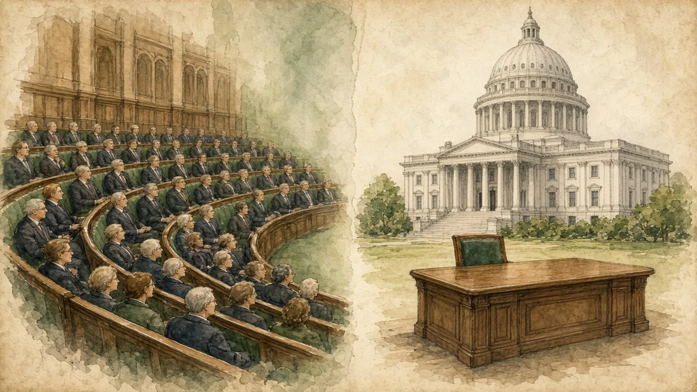

Elections and a constitution are not enough. Power stays limited only if someone with real authority can say no — and cannot easily be silenced.
Courts and checks on power · Lesson 9 of 9
🌍 Politics map · ← Politics Around the World · 🌱 Easier version (A2) · ← Who Tells Us the News?

Each new word is hidden in a sentence. Read it aloud and say what you think the bold word means from the rest of the sentence — then reveal it and see how close you were.
Read each part. After it, there's a quick comprehension check (try the questions from memory first), then one thing to discuss.
Many countries give a court the final word on whether a law respects the constitution, but they design it differently. In the USA, any court can review a law, and the nine Supreme Court justices, nominated by the president and confirmed by the Senate, serve for life. Germany has a specialised Federal Constitutional Court whose 16 judges are elected by the Bundestag and Bundesrat, each needing a two-thirds majority, so no single party can fill the court alone. France's Constitutional Council, whose nine appointed members are chosen by the president and the heads of both chambers, traditionally reviewed laws before they were signed, and since 2010 citizens can also challenge a law that already applies to them. Poland has a Constitutional Tribunal of 15 judges elected by the Sejm. The key variables are who appoints the judges, for how long, and by what majority. Constitutions can also protect themselves: amending the US constitution needs two thirds of Congress and three quarters of the states, while Germany's basic law contains an eternity clause that forbids changing core principles such as human dignity and federalism.
1. Why does Germany require a two-thirds majority to elect constitutional judges?
2. What is an eternity clause?
1. So that no single party can fill the court alone.
2. A rule that forbids changing certain core principles of the constitution.
Checks are tested most in a crisis and when a government has a strong majority. Many constitutions allow emergency powers: France's Article 16 lets the president take special measures when the nation is under serious threat, but it has been used only once, in 1961, and a state of emergency declared after the Paris attacks of 2015 was extended several times before ending in 2017. Governments can also use procedures to limit debate. In 2023, the French government raised the pension age from 62 to 64 using Article 49.3, which passes a bill without a vote unless parliament passes a motion of censure; the motion failed by only nine votes, and the decision sparked months of protests. In the USA, presidents often rely on executive orders, which Congress and the courts can limit but not always quickly. Effective oversight therefore involves several bodies at once: parliamentary committees, auditors, ombudsmen, courts and a free press, as lesson 8 showed.
1. How does Article 49.3 work in France?
2. Why does effective oversight need several bodies?
1. It passes a bill without a vote unless parliament passes a motion of censure.
2. Because no single body can check every kind of power or act quickly in every situation.
Checks can also be weakened gradually, while every step looks legal, and arguments about whether this is happening are usually fierce. After the 2015 election in Poland, the Law and Justice government and the president clashed with the Constitutional Tribunal over the appointment of judges, and later reforms changed how judges were chosen and disciplined. The government said the courts needed to become more accountable and to be cleared of post-communist elites. Critics, including the European Commission, argued that the reforms threatened judicial independence, and in 2017 the Commission began an Article 7 procedure against Poland, while the EU's Court of Justice later ruled against parts of the reforms. After the 2023 election, Donald Tusk's government promised to restore the rule of law, but a president from the rival camp used the veto, so the conflict continued; the Article 7 procedure was closed in 2024. The case shows two points: a supranational level can act as an extra check, and institutions depend on political norms as well as on written rules.
1. What did the European Commission do in 2017?
2. What two arguments did each side make?
1. It began an Article 7 procedure against Poland over judicial independence.
2. The government said the courts needed to be more accountable; critics said the reforms threatened judicial independence.
A stereotype and the reality rarely match. This lesson's grammar gives you the structure to describe the difference.
Complete each sentence about Who Can Say No? Checks on Power.
1. Only when two thirds of both chambers agree the constitution be changed. (can / does)
2. Not only the court review laws, but it also protects individual rights. (does / is)
3. Rarely a government lose a vote when it has a clear majority. (does / has)
1. can
2. does
3. does
1. Under no circumstances judges be removed for the content of their rulings. (should / are)
2. Not until the 2010 reform French citizens challenge a law after it had been passed. (could / can)
3. Hardly the decision been announced when protests began. (had / has)
1. should (or may / can)
2. could
3. had
Hold on to this — you'll need it in the Speak tab.
The belief that “elections and a constitution are enough” confuses the existence of institutions with their independence. A constitution is a text; the checks it creates exist only if the people who hold them are willing to use them, and if those who would be checked accept the result. Researchers who study democratic backsliding point out that the process is usually gradual and legal: courts are reorganised, media ownership shifts, electoral rules are adjusted. Defenders of governments accused of this often reply that they are correcting problems, such as unelected judges holding too much power. A useful test is symmetry: would you accept the same change if your political opponents were in power?
This is the heart of the lesson — do all of it out loud. The timer is there to keep you going: fill the time with detail rather than escaping it.
Explain how a government can be checked, as if to a friend who believes that elections are enough. Move through the arc: courts and constitutions → power under pressure → when checks are contested → what to ask about any system.
Use today's grammar at least three times, and work in at least five key words (constitutional court, judicial independence, accountability, oversight, emergency powers, amendment, supranational, backsliding).
“Judges who are not elected should not be able to overrule elected governments.” Discuss.
Tell a story from your own world — work, family, the news — that connects to this topic. Stuck for an idea? Pick one of these and run with it:
🌍 Politics map · ← Politics Around the World · 🌱 Easier version (A2) · ← Who Tells Us the News?